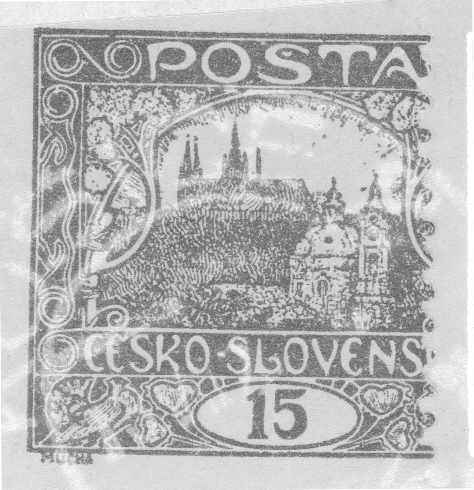
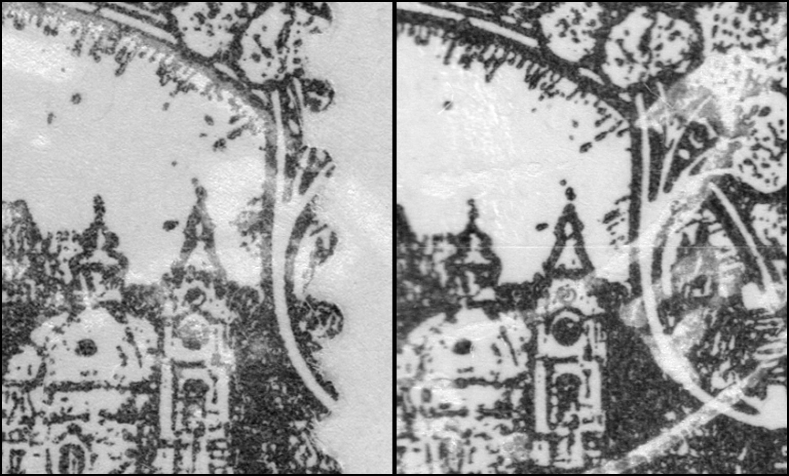

Geschnittene 15h aus Platte VI postalisch verwendet — Košice 2, 13. VII. 1920
Eine Postkarte, frankiert mit zwei Hradschin-Marken — 15 h ziegelrot und 5 h hellgrün —, wirkt auf den ersten Blick unscheinbar. Der Stempel KOŠICE 2 * Č.S.P. mit dem lesbaren Datum 13. VII. 1920 entwertet jedoch eine Marke, die Aufmerksamkeit verdient: Die 15h ist geschnitten und stammt, wie die Bestimmung von Platte und Feld zeigte, aus der 6. Druckplatte. Die Postkarte ist vollständig erhalten; die Abbildungen unten sind nur Ausschnitte aus ihrer Frankatur.

Geschnittene 15h-Bogen sind aus den Druckplatten 1 und 2 gewöhnlich belegt. Eine postalisch verwendete geschnittene Marke aus Platte 5 oder Platte 6 ist dagegen ein seltenes Vorkommen — und genau ein solches Stück konnte hier belegt werden, samt vollständigem Verwendungsdatum.
Bestimmung von Platte und Markenfeld
Die Marke wurde durch eine Kombination aus dem rechnergestützten Vergleich mit der Referenzbibliothek gebrauchter Marken (über 11 000 registrierte Stücke aller sieben Platten) und der klassischen Methode bestimmt: Zuerst wies der Plattenklassifikator auf Platte VI (mit einer Wahrscheinlichkeit von 0,99), das Positionsmodell innerhalb der Platte dann auf das Markenfeld 34. Bestätigt wurde die Bestimmung durch Punktfehler — das Sternbild von Punkten im Himmel rechts der Kathedrale und der charakteristische Punkt knapp links von der Spitze des sechsten Türmchens.


Eine Besonderheit dieser Frankatur ist, dass die aufgeklebte 5h-Marke den rechten Rand der 15h überdeckt — bei der Bestimmung war daher etwa ein Sechstel der Zeichnungsbreite nicht sichtbar. Unten blieb der Bogenrand mit der Signatur MUCHA erhalten.